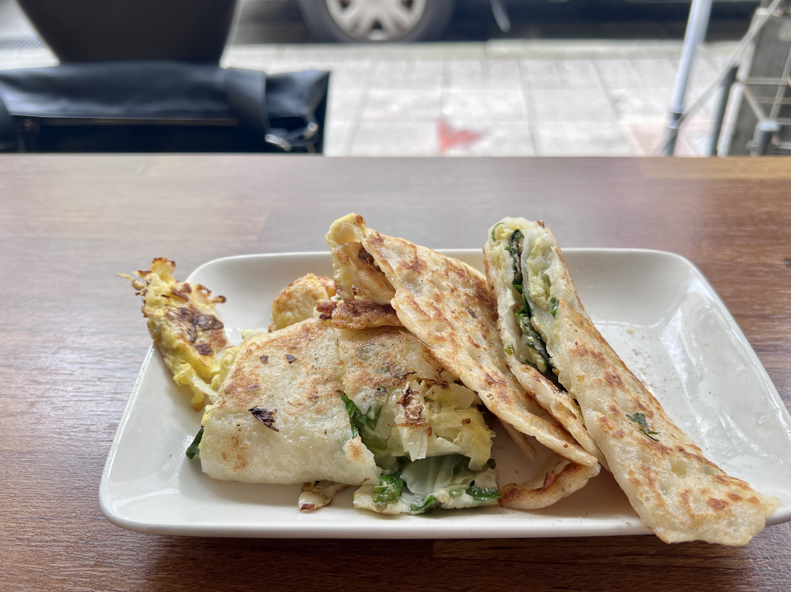
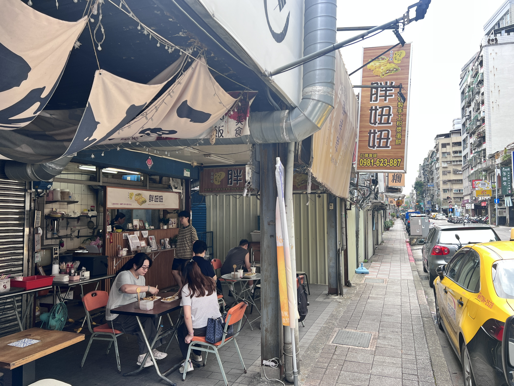

當我問一位從小住在萬華的朋友最推薦的一間萬華早餐店，他二話不說馬上推薦「胖妞妞粉漿蛋餅」，能在台北這個美食一級戰區中脫穎而出，還讓在地人念念不忘，這家店肯定有過人之處。
我們點了蔥花和九層塔兩種蛋餅，當老闆娘把餐點送到桌上時我們真的被這間店的份量所驚艷到，真的非常大份！而相較於一般蛋餅，粉漿蛋餅又更有飽足感，很適合拿來當作早餐開啟美好的一天。整塊蛋餅被周圍煎到「恰恰」的麵皮所包覆，一口咬下先是吃到酥脆且帶有微微焦香的「恰恰餅皮」，迎接而來的是粉漿餅皮包裹著高麗菜、九層塔、雞蛋，高麗菜的味道雖然不突出，不過卻增添了蛋餅的口感，讓整個蛋餅更為豐富。
吃到一半如果想換換風味，很推薦在這時淋上一點店家自製的生辣椒醬油，整體不會過辣，多半是增加其香味，並且更凸顯九層塔特殊的風味。整體來說是cp值非常高的一家早餐店，唯一的缺點是座位少而且沒有冷氣，但有機會來萬華一定要試試。